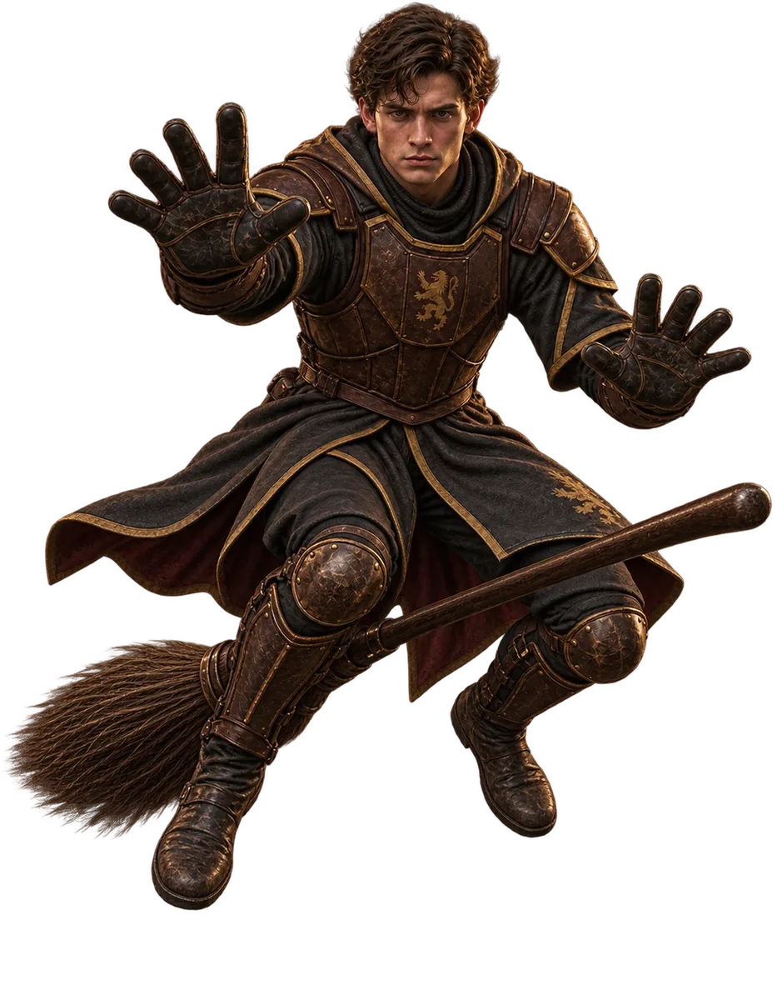
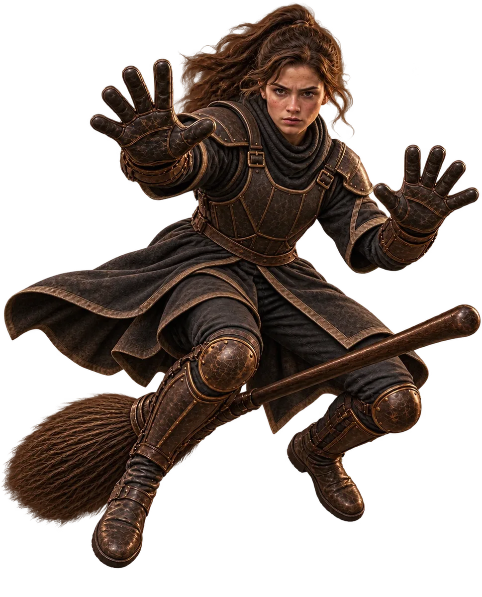

Školní pozemky
Famfrpálové hřiště
Nad prázdným hřištěm se v pohybu drží camrál a občas se mihne i zlatonka.
Zkouška brankáře
20 střel · klikni na obruč a přesuň brankáře
20 střel · klikni na obruč a přesuň brankáře
Školní pozemky
Nad prázdným hřištěm se v pohybu drží camrál a občas se mihne i zlatonka.
Bradavický famfrpál
Dva studenti chytají současně, každý na své obrazovce. Na 90 sekund dostanete stejnou posloupnost střel. Některé letí rychleji.
Kód tvé místnosti: —

Připrav se na duel.
Za každých pět chycených střel v nepřerušené sérii uslyšíš potlesk. Chat se spolužákem otevřeš přes Soví poštu.
Famfrpálové hřiště
Camrál letí k jedné ze tří obručí. Klikni na obruč, kam se má brankář přesunout.

Připrav se.